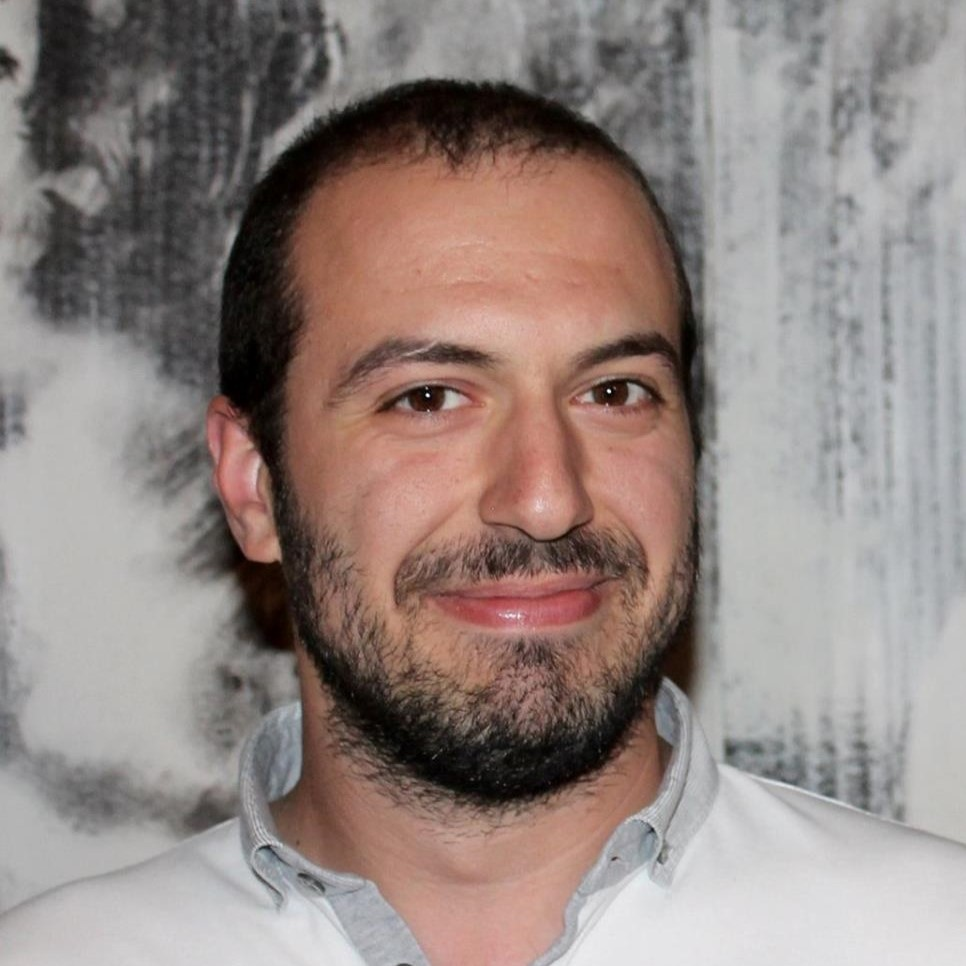
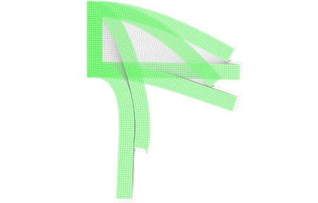
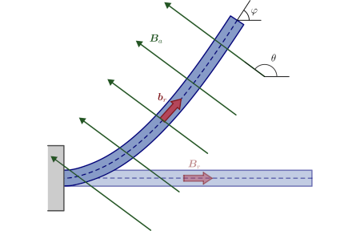
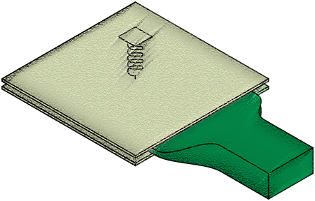
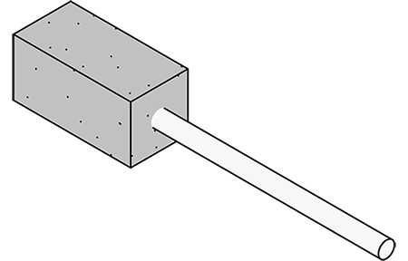
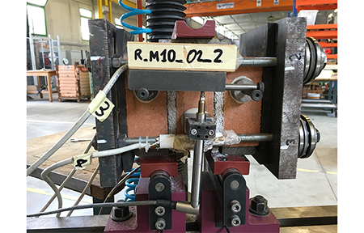

Marco Amato
Postdoctoral researcher
Marco was born in Bologna on 11 January 1993. He completed his education at the Istituto Tecnico per Geometri Pier-Crescenzi Pacinotti, a technical high school for surveyors, where he was first introduced to structural mechanics. He earned both a bachelor's and a master's degree in civil engineering from the University of Bologna. During his master's studies, he spent a research period as a visiting scholar at Florida Atlantic University in the United States. Marco also obtained a doctorate from the University of Trento and is currently working as a postdoctoral researcher at the Czech Technical University in Prague.
Research interests
His research interests are primarily situated within the field of solid and structural mechanics, with a focus on the complexities that arise when nonlinearity is involved. Within this area, he has concentrated his efforts on exploring configurational forces and the interactions between magnetic and elastic phenomena commonly referred to as magnetoelasticity. His work involves both the development of analytical models and the application of numerical simulations to verify these models, aiming to deepen the understanding of material responses and instabilities under multiphysics loading.





News:
May 2026
Marco has recently published a new article in Computer Methods in Applied Mechanics and Engineering introducing a novel regularization approach for the third medium contact method in finite strain settings. The proposed formulation improves robustness and implementation efficiency by enabling first-order finite element discretizations without additional degrees of freedom, offering new perspectives for challenging contact problems such as topology optimization.
April 2026
Marco has been awarded funding through the Iniciační Fond FSv program of the Faculty of Civil Engineering at the Czech Technical University in Prague to support the resubmission of a Marie Skłodowska-Curie Postdoctoral Fellowship proposal. The funding will contribute to refining the project, strengthening international collaborations, and enhancing its competitiveness within the highly selective European fellowship program.
March 2026
Marco delivered the doctoral course An Introduction to Nonlinear Solid Mechanics as an invited lecturer at the University of Palermo. The course attracted strong participation from PhD students and faculty and provided an excellent opportunity for discussion on nonlinear solid mechanics.
September 2025
Marco presented his research titled Hard-magnetic soft materials: theory and implementation at the YIC - ECCOMAS 8th Young Investigators Conference in Pescara, Italy. The event brought together early-career researchers and offered a stimulating environment to exchange ideas and explore new directions in computational mechanics and related fields.
June 2025
Marco presented his research titled Hard-magnetic soft materials: theory and implementation at the 1st HICOMP Conference - Hellenic-Italian Conference on Computational Mechanics, Biomechanics and Mechanics of Materials held in Rhodes Island, Greece. The conference provided an engaging platform to share recent advances and foster collaboration within the theoretical and computational mechanics community.
June 2025
In collaboration with Martin Horák, Marco is co-organizing the RAMSS 2025 Workshop on Recent Advances in the Mechanics of Soft Solids, to be held in Prague. The workshop will bring together researchers to discuss recent theoretical, computational, and experimental developments in the mechanics of soft materials.
April 2025
Marco’s PhD thesis, Elastic Solids Under Frictionless Rigid Contact and Configurational Force, has been selected as one of the finalists for the 2024 GMA-AIMETA Best Doctoral Thesis Award in Mechanics of Materials. While not the winner, being selected as one of the best national candidates is an honor and a recognition of his contributions to the study of configurational forces in nonlinear elasticity.
April 2025
Marco has been invited to present his doctoral work, Elastic Solids Under Frictionless Rigid Contact and Configurational Force, at the Nečas Seminar on Continuum Mechanics, organized by the Faculty of Mathematics and Physics, Charles University. His presentation focused on the extension of the J-integral to frictionless rigid contact problems in nonlinear elasticity, exploring how configurational forces influence the mechanical response of elastic solids under such conditions.
April 2025
Marco was awarded funding from the Iniciační Fond FSv, a competitive program supporting early-career researchers and international scientific collaboration. The grant will support a research visit by Prof. Luis Dorfmann and the development of analytical and numerical models for magnetoelastic materials, strengthening ongoing collaborations in the field of magnetoelasticity.
June 2024
Marco presented his research titled Efficient numerical approach to modelling of hard magnetic soft beams at the ICNEM – 26th International Conference on Nonlinear Elasticity in Materials. The conference brought together researchers working on nonlinear elasticity and advanced materials, providing an excellent opportunity to discuss recent developments and exchange ideas within the international mechanics community.
May 2024
Marco has published a new article in the Journal of the Mechanics and Physics of Solids on the mechanics of homogeneous elastic solids in frictionless contact with rigid constraints. The study demonstrates that a path-independent J-integral is equal to the energy release rate G, establishing a connection between configurational and Newtonian forces in nonlinear elasticity.
May 2024
Marco was awarded the degree of Doctor of Philosophy (Ph.D.) by the University of Trento, completing his doctoral research on frictionless contact problems and configurational forces in nonlinear elasticity.
January 2024
Marco has been selected as a postdoctoral fellow at the Czech Technical University in Prague. This appointment provides opportunities for further research and collaboration in solid mechanics and related fields.
September 2023
Marco has been confirmed as teaching assistant for the academic year 2023/2024 for the undergraduate course Scienza delle Costruzioni (Solid Mechanics) at the School of Engineering, University of Trento, Italy.
June 2023
Marco presented his research titled Elastic Solids Moving Along Frictionless Constraints via Configurational Forces at the workshop Mathematics and Mechanics of Solids and Structures: Scientific Challenges and Methodologies for Future Societal Development in Aberystwyth, Wales (UK). The workshop provided an engaging platform to discuss recent advances in solid and structural mechanics and to foster collaboration among researchers from different scientific disciplines.
July 2022
Marco has been confirmed as teaching assistant for the academic year 2022/2023 for the undergraduate course Scienza delle Costruzioni (Solid Mechanics) and the graduate course Teoria e Dinamica delle Strutture (Theory and Dynamics of Structures) at the School of Engineering, University of Trento, Italy.
December 2021
Marco has been appointed as teaching assistant for the academic year 2021/2022 for the graduate course Meccanica Computazionale delle Strutture 2 (Computational Mechanics 2) at the School of Engineering, University of Trento, Italy.
June 2021
Marco has been appointed as teaching assistant for the academic year 2021/2022 for the undergraduate course Scienza delle Costruzioni (Solid Mechanics) and confirmed for the graduate course Teoria e Dinamica delle Strutture (Theory and Dynamics of Structures) at the School of Engineering, University of Trento, Italy.
November 2020
Marco has been appointed as teaching assistant for the academic year 2020/2021 for the graduate course Teoria e Dinamica delle Strutture (Theory and Dynamics of Structures) at the School of Engineering, University of Trento, Italy.
October 2020
Marco has started his Ph.D. studies with the Solid and Structural Mechanics Group at the University of Trento.
July 2020
Marco was awarded a Master's degree in Civil Engineering by the University of Bologna.